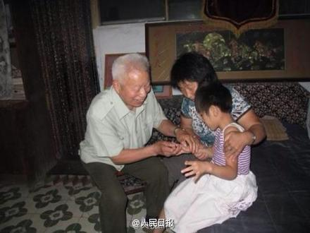

又见人民日报的奇葩逻辑，好医生的定义是能高效地治病救人，而不是收不收费。//@付亮的竞争情报应用:破坏市场规律的公益行为只能是个别行为，不值得鼓励！@人民日报:【中国好医生：只要饿不着肚子，就不收费】据央视：他擅长针灸和中医外科，1968年以来，常年为患者治病不收钱，接诊近22万人次，送医上门4万多次，步行3万多公里，磨坏胶鞋60多双，无偿舍药5万多份……“我不抽烟，不赌博，只要饿不着肚子，就不收费。”82岁河北老中医申祥瑞妙手仁心，转起致敬！ 
 】据央视：他擅长针灸和中医外科，1968年以来，常年为患者治病不收钱，接诊近22万人次，送医上门4万多次，步行3万多公里，磨坏胶鞋60多双，无偿舍药5万多份……“我不抽烟，不赌博，只要饿不着肚子，就不收费。”82岁河北老中医申祥瑞妙手仁心，转起致敬！
】据央视：他擅长针灸和中医外科，1968年以来，常年为患者治病不收钱，接诊近22万人次，送医上门4万多次，步行3万多公里，磨坏胶鞋60多双，无偿舍药5万多份……“我不抽烟，不赌博，只要饿不着肚子，就不收费。”82岁河北老中医申祥瑞妙手仁心，转起致敬！